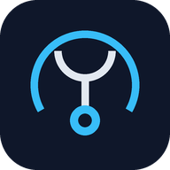

Stethos
- Android：Chrome（Edge / Samsung Internet も可）
- iPhone：Bluefy（無料の Web Bluetooth 対応ブラウザ）
- PC：Chrome / Edge
接続の前に確認
- BLE（Bluetooth 5.1）対応アダプターを車の OBD ポートに挿している
- エンジン（イグニッション）が ON
- 他の OBD アプリは閉じている
詳細設定（任意）
アダプターの UUID が分かっている場合だけ入力します。通常は空欄で構いません。
接続に成功した UUID は自動で保存され、次回からは入力不要です（「保存した UUID を管理」で確認・削除できます）。
お試しモード
車やアダプターがなくても、疑似アダプターで画面や動作を試せます（URL に ?debug=1 でも起動）。
走行中は画面を操作しないでください。
Stethos v0.0.37
UUID の入力
選んだ機器：-
この機器は登録済みの UUID に一致しませんでした。アダプターのサービス UUIDを入力してください。
入力した UUID は接続に成功すると保存され、次回からは入力不要です。
UUID は、アダプターが持つ通信の窓口（サービス）を見分けるための番号です。
4 桁（例：FFF0）または 36 文字（例：e7810a71-73ae-499d-8c15-faa9aef0c3f2）の形式で入力します。大文字・小文字や先頭の 0x は気にしなくて大丈夫です。
UUID の調べ方（nRF Connect）
- スマホに「nRF Connect for Mobile」（無料）を入れる
- SCAN して、アダプター（OBDII など）の CONNECT を押す
- 「Generic Access」「Generic Attribute」以外のサービスをタップして開く
- 中の項目に「WRITE」（アプリ → アダプターの送信）と「NOTIFY」（アダプター → アプリの受信）が表示されているサービスを探す
- そのサービスの UUID（例：
0xFFF0）を上の欄に入力する - nRF Connect で DISCONNECT してから、このアプリで接続する
「接続」を押すと機器の一覧がもう一度開きます。同じアダプターを選び直してください。
UUID 管理
アダプターの動作報告
保存した UUID
既知の UUID（参考・削除不可）
アプリに最初から登録されている UUID です。これらに当てはまるアダプターは入力なしで接続できます。
この車で表示できる項目がありません。
言語 / Language
表示
配色・形・数字の書体・バーやメーターの描き方が変わります（画面の配置は変わりません）。
ステータス画面・マイページの各項目に反映されます。
通信
複数の項目（最大 6 個）を 1 回の問い合わせでまとめて取得し、更新を速くします。CAN 通信の車（2008 年ごろ以降のほとんどの車）で使えます。表示がおかしいときや、更新が止まるときはオフにしてください。
アダプターの動作報告
マイページ
すべてのプリセットを削除し、空のマイページ 1 つ（12 枠）に戻します。
Stethos v0.0.37
© 2026 s1v ／ GPL-3.0 License
故障コード一覧
汎用 OBD で読めるのは主にエンジン系（排ガス関連）の故障コードです。メーカー独自コードは説明文なしで表示します。